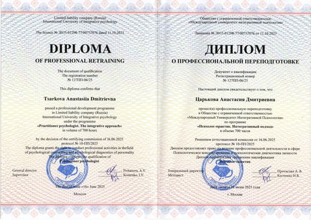
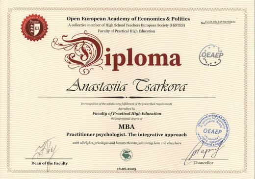
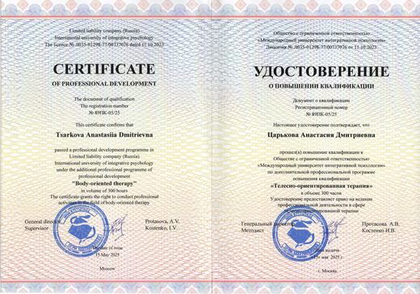
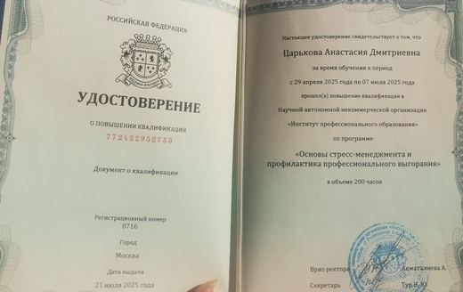
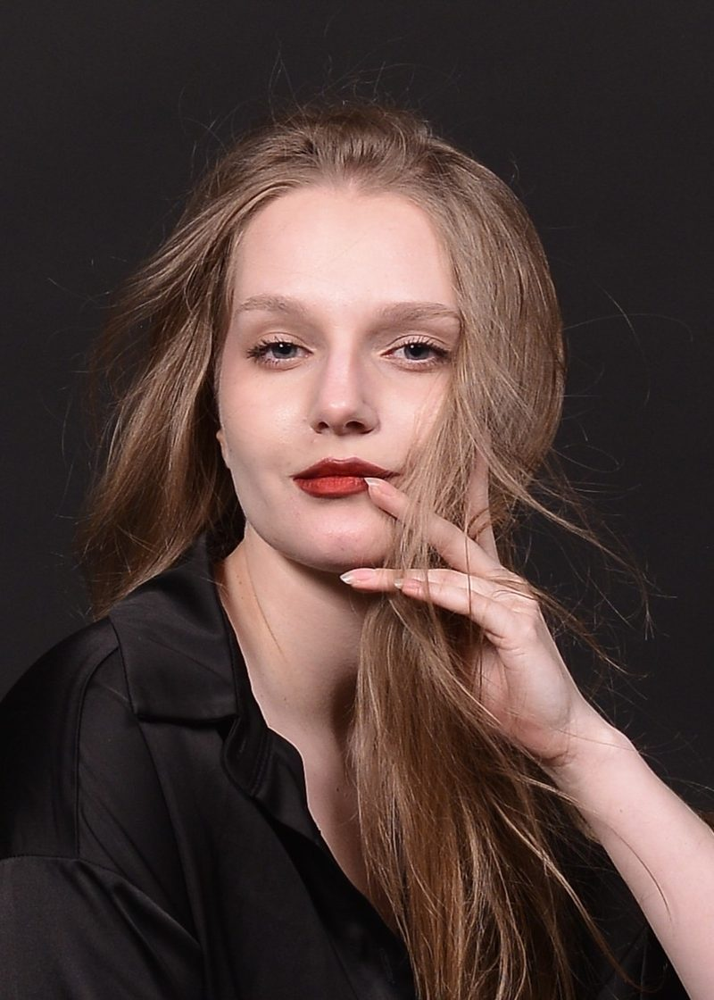

С чем можно прийти
Это могут быть люди, у которых снаружи всё в порядке: работа, отношения, планы. А внутри:
- чувства понятны головой, но не проживаются: «я знаю, что должен радоваться»;
- радость потускнела, всё просто «нормально», не больше;
- в памяти не всплывает, когда в последний раз была радость или злость;
- дни похожи один на другой, будто их можно перемотать и ничего не потерять;
- ощущение нереальности, будто смотрите на свою жизнь со стороны или через экран;
- тело как чужое: зажатые плечи и челюсть, задержанное дыхание, вечно холодные руки, усталость, которую не снимают ни сон, ни отпуск;
- тело внезапно «подводит»: спина, желудок, голова, приступы тревоги, а врачи говорят, что всё в порядке;
- или наоборот: любое ощущение пугает, и сигналы тела вместо понимания вызывают панику;
- внутри пустота, которую не заполняют ни еда, ни сериалы, ни люди;
- вы уже ходили к психологу, но сессии свелись к пересказу недели. Вы и так всё анализируете и раскладываете по полочкам, от этого голова напрягается ещё больше, а легче не становится.
Что значит «не чувствовать»
Это не всегда «внутри пустота и ничего нет». Чаще чувства и ощущения тела не исчезли, а приглушены, и человек может годами этого не замечать. Узнать себя можно по мелочам:
- на вопрос «что вы сейчас чувствуете?» первой приходит мысль («я думаю, что…»), а не ощущение;
- голод, усталость или жажду вы замечаете поздно, когда уже совсем плохо;
- напряжение в плечах, челюсти, спине обнаруживается, только когда оно заболело или на него кто-то указал;
- злость, обиду или грусть вы осознаёте спустя часы или дни, а в моменте всё «нормально»;
- «нормально» — ваш обычный ответ на «как дела?», и вы не уверены, что за ним что-то стоит;
- трудно понять, чего вы хотите: выбор еды, фильма или отпуска превращается в расчёт, а не в «хочу».
Это не диагноз, и по такому описанию нельзя понять, что именно с человеком происходит. Если вы давно подавлены, вас ничто не радует или тяжело справляться с повседневными делами, обратитесь за очной помощью к врачу.
Если вам кажется, что это депрессия
Описания приглушённых чувств внешне очень похожи на клинические состояния: депрессию, пограничное расстройство личности, биполярное расстройство и другие. Различить их по описанию нельзя, и сделать это может только врач. Поэтому здесь важно провести черту.
Я психолог-консультант, а не клинический психолог и не психиатр. Я не ставлю диагнозов, не назначаю лечение и не имею права работать с клиническими расстройствами в одиночку. Всё, что вы читаете на этом сайте и в моих материалах, вы используете на свой риск и под свою ответственность. Пожалуйста, не пренебрегайте медициной: психика и тело неразрывны.
Если вам тяжело справляться с повседневными делами, нет сил вставать, интерес пропал почти ко всему, часто возникают мысли о том, что жить не хочется, или мысли причинить себе вред, пожалуйста, обратитесь к врачу (психиатру или психотерапевту) очно. При мыслях о самоповреждении не ждите приёма: позвоните в местную службу экстренной помощи или обратитесь в ближайшую больницу.
Можно ли работать со мной, если у вас есть диагноз
Да, при трёх условиях:
- Ваше состояние сейчас не в острой фазе.
- Вы параллельно наблюдаетесь у лечащего специалиста.
- Вы понимаете, что выбор врача и регулярность наблюдения остаются вашей зоной ответственности.
Сначала обследование
Усталость, бессилие и подавленность иногда связаны с физиологией, а не только с психикой. Поэтому перед работой стоит пройти базовое обследование у врача и обсудить, какие анализы нужны именно вам (например, гемоглобин и ферритин, гормоны щитовидной железы, витамин D и витамины группы B). Мы не ищем психологические причины там, где телу просто не хватает ресурса.
О том, что известно про телесную работу при депрессивных состояниях, собрано в разделе «Что говорят исследования» ниже.
Чтобы примерно оценить выраженность симптомов, можно пройти шкалу депрессии Бека (BDI). Это не диагноз и не замена врачу. Если баллы высокие или вы просто сомневаетесь, покажите результат специалисту.
По ссылке старая, свободно распространяемая версия шкалы. Актуальная BDI-II коммерческая и используется специалистами.
Своего проверенного психиатра, которого я могла бы рекомендовать, у меня пока нет. Если вы врач-психиатр или другой специалист, работающий с клиническими состояниями, и открыты к профессиональному сотрудничеству, напишите мне.
Почему через тело
Если вы много анализируете, то, скорее всего, уже знаете про себя почти всё. Проблема не в знании. Чувства живут не в голове, а в дыхании, в мышцах, в том, как мы держим плечи, размахиваем руками при разговоре и двигаем бёдрами при ходьбе.
Когда долго было небезопасно чувствовать, психика делает умную вещь: убавляет громкость. Тело зажимается, дыхание становится поверхностным, и вместе с болью приглушается всё остальное: радость, интерес, вкус к жизни.
Иногда нужно не обсудить и понять ещё раз, а впервые почувствовать.
Что говорят исследования о работе с телом
Ниже несколько работ, на которые я опираюсь. Привожу их, чтобы вы могли проверить всё сами по первоисточнику. Это справочная информация, а не обещание: результаты исследований не гарантируют такого же результата у конкретного человека. Крупных исследований в этой области пока мало, и авторы работ сами на это указывают.
Телесная психотерапия при депрессии
2013
Röhricht, Papadopoulos, Priebe. Journal of Affective Disorders
Рандомизированное исследование с людьми, у которых была хроническая депрессия. Одна группа сразу прошла курс групповой телесной психотерапии (20 занятий за 10 недель, в дополнение к обычному лечению), другая ждала своей очереди. К концу курса депрессивные симптомы у прошедших курс были заметно ниже, чем у ожидавших.
Важно: это небольшое пробное исследование, были трудности с набором и выбыванием участников.
Оригинал (DOI)2021
Rosendahl, Sattel, Lahmann. Frontiers in Psychiatry
Систематический обзор и мета-анализ 18 рандомизированных исследований телесной психотерапии. Эффект на психические симптомы и психологический дистресс получился средним по размеру. Работа охватывает разные состояния, а не только депрессию.
Оригинал (DOI)2026
Heider, Sulz, Franzen. Frontiers in Psychology
Мета-анализ рандомизированных исследований психодинамической терапии при депрессии, в которой внимание уделяется телесному опыту. После курса состояние участников было лучше, чем в контрольных группах, и это различие сохранялось при последующей проверке. С уже проверенными методами терапии различий после курса не нашли.
Важно: результаты в разных исследованиях сильно отличались, а сама работа про психодинамическую терапию с телесным фокусом, а не про любую телесную терапию.
Оригинал (DOI)Тело и эмоции
2014
Nummenmaa, Glerean, Hari, Hietanen. PNAS
Более 700 участников закрашивали на силуэте тела области, где они чувствуют усиление или ослабление активности при разных эмоциях. У разных эмоций получились разные и узнаваемые «карты ощущений в теле», причём у жителей Западной Европы и Восточной Азии они совпали.
Важно: это самоотчёт участников, то есть исследование описывает, как люди ощущают эмоции в теле, а не лечит ли работа с телом.
Оригинал (DOI)2019
Price, Thompson, Crowell, Pike. Drug and Alcohol Dependence
Рандомизированное исследование с 187 женщинами, проходившими лечение от зависимости от психоактивных веществ. К обычному лечению добавляли «Осознанное внимание в телесно-ориентированной терапии» (MABT, 8 занятий, на которых учатся замечать и различать сигналы тела), занятия о женском здоровье или ничего. В течение года у группы MABT лучше развивались навыки осознавания тела и эмоциональной регуляции, а употребление веществ и тяга к ним снижались сильнее, чем при обычном лечении.
Важно: исследование про зависимость от веществ, а не про депрессию или эмоциональное онемение, и в нём участвовали только женщины.
Оригинал (DOI)2025
Cox, van Klaveren. Статья 2025 года
46 участников стояли на балансной платформе и смотрели на 21 абстрактную картину XX века. Микродвижения тела (то, как человек удерживает равновесие) были связаны с тем, насколько картина эмоционально трогала и нравилась. Авторы видят в этом подтверждение того, что восприятие искусства телесно.
Важно: измерялись колебания равновесия, а не осанка в целом.
Оригинал (DOI)Как мы ищем решения
2009
Thomas, Lleras. Psychonomic Bulletin & Review
52 студента решали известную задачу на «озарение»: нужно связать две верёвки, подвешенные далеко друг от друга. Во время перерывов одних просили размахивать руками (как маятником, что подсказывало решение), других растягивать руки. Большинство участников не заметили связи между упражнением и задачей, но те, кто размахивал руками, решали её заметно чаще, примерно на 40%.
Важно: исследование показывает связь движений тела и мышления у студентов. Оно не про терапию и не говорит о том, поможет ли это в работе с психологом.
Оригинал (DOI)2021
Adams, Converse, Hales, Klotz. Nature
В серии экспериментов людей просили улучшить предмет, идею или ситуацию: например, достроить симметричный узор или укрепить конструкцию из деталей. Участники систематически искали, что добавить, и упускали варианты, где достаточно убрать лишнее, даже когда это проще и лучше.
Важно: исследование не про психотерапию и не про психическое здоровье. Оно про то, как люди ищут решения вообще.
Оригинал (Nature)Обо мне
В психологию я пришла из прикладной информатики. Привыкла иметь дело со сложными системами и искать, где именно что-то ломается. С людьми это работает иначе, но привычка не принимать ничего на веру осталась.
Но дорога была и личной: я пришла в психологию изнутри. Годами жила как в тумане: хроническая усталость, пустота, непонимание, кто я и чего хочу. Умом понимала всё, а не чувствовала ничего.
Сначала я подробно изучала тему выгорания. Постепенно стало ясно, что самое интересное и самое недооценённое лежит глубже: состояния, когда чувства и ощущения тела приглушены, иногда так, что человек сам этого не замечает.
Сейчас это мой главный фокус. Скажу честно: практики именно с этим у меня пока немного. Зато всё, что я изучаю, и всё моё внимание направлены на эту тему. Хочу развивать её дальше: в будущем собираюсь получить магистерское образование по психологии, а когда-нибудь, возможно, заняться исследованиями и писать работы по этой теме.
Я сама прошла через это состояние, а вы, возможно, проходите через него сейчас. Поэтому я не отношусь к нему как к поломке, которую нужно срочно чинить: мы с вами на одной стороне.
Мне важно, чтобы больше людей знали: такое состояние существует, оно не значит, что с вами что-то не так, и из него бывает выход. Метод ещё складывается, и я развиваю его рядом с теми, кто готов пробовать. Считаю это вкладом в общее дело.
На сессиях немного теории и много внимания к тому, что происходит с вами прямо сейчас. Мы не рассуждаем, «что со мной не так», а смотрим, как это ощущается и проживается.
Основной подход — телесно-ориентированный. Училась в рамках интегративной психологии и по-прежнему считаю, что одним методом всё не решается, поэтому точечно использую техники эмоционально-образной терапии, гештальта, КПТ.
Образование и документы

«Психолог-практик. Интегративный подход». Диплом о профессиональной переподготовке. Международный университет интегративной психологии, 2025
MBA «Practitioner psychologist. The integrative approach». Open European Academy of Economics & Politics, Прага, 2025
«Телесно-ориентированная терапия». Удостоверение о повышении квалификации. Международный университет интегративной психологии, 2025
«Основы стресс-менеджмента и профилактика профессионального выгорания». Удостоверение о повышении квалификации. Институт профессионального образования, 2025
Высшее образование (бакалавриат): прикладная информатика, МИЭТ.
На сайте могут быть указаны не все дипломы и сертификаты: я могла забыть обновить список.
Как проходит работа
Онлайн
3000 RUB / 35 EUR / 15 000 AMD
С телом можно работать и так. Мы разговариваем, а я обращаю внимание на то, что происходит с телом, пока вы говорите: где задерживается дыхание, что делают руки, где напряжение.
Используем простые упражнения на дыхание, движение и ощущения. Никакой акробатики, всё можно делать сидя перед камерой.
Очно в Ереване
20 000 AMD
Если вы видели в интернете телесную терапию с тряской и криками, здесь будет по-другому. Это спокойная и глубокая работа, и в первую очередь ваша собственная. Я не «делаю» с вами что-то: заметить и прожить происходящее предстоит вам самим.
Сначала много практики на то, чтобы почувствовать границы своего тела и свои ощущения: где я заканчиваюсь, что во мне происходит, когда я стою, дышу, двигаюсь. Потом переходим к тому, как вы находитесь среди других людей: дистанция, опора, умение занять место, сказать «нет» и выдержать контакт.
Часть упражнений выполняется в контакте со мной. Всё только с вашего согласия и в вашем темпе.
Между встречами
В любом формате между встречами предлагаются небольшие практики или наблюдения за собой. Работа не ограничивается встречей раз в неделю: она продолжается в обычной жизни, когда вы начинаете замечать себя в ней.
- Начинаем с бесплатного знакомства в переписке: обсуждаем запрос и решаем, подходим ли мы друг другу. Чтобы понять, подходит ли вам такая работа, обычно нужно 4–5 встреч.
- Можно совмещать очный и онлайн формат встреч.
- Рекомендуемая частота: раз в неделю или раз в две недели.
Публикации
Статьи на б17
Тексты об эмоциональном онемении, диссоциации, тревоге и поиске себя.
YouTube
Как уснуть, если обычные советы не помогают: разбор от «много мыслей» до «постоянно верчусь», в том числе состояний вроде «голове неудобно лежать, ноги хочется согнуть». И авторская практика для тела перед сном.
Канал «Царство сонных»
Мои мысли о психологии и жизни.
Контакты
Если узнали себя, напишите. Можно своими словами, даже если звучит как «я не знаю, что со мной, просто всё как-то не так».
Сообщение ни к чему не обязывает: можно просто написать и спросить. Отправить его можно в любое время дня и ночи, я отвечу в своё рабочее время.
* Instagram принадлежит компании Meta, которая признана экстремистской организацией и запрещена в РФ.
